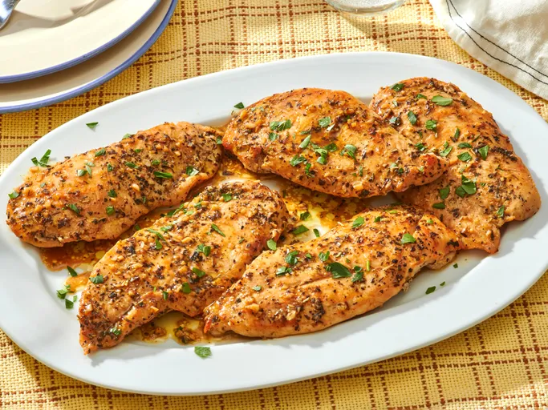

Garlic Butter Chicken Cutlets

These Garlic Butter Chicken Cutlets cook quickly on the stovetop, creating a nice garlicky pan sauce in the process.
Ingredients
- 1 1/2 teaspoons salt
- 3/4 teaspoon freshly ground black pepper
- 2 teaspoons dried Italian herb seasoning
- 6 (4 ounce) chicken breast cutlets
- 1 tablespoon olive oil
- 2 tablespoons unsalted butter
- 1 1/2 tablespoons minced fresh garlic
- 1/2 cup low-sodium chicken broth
- fresh parsley, for garnish
Instructions
- Stir salt, black pepper, and Italian seasoning together in a small bowl.
- Pat each cutlet dry with paper towels. If cutlets are thick on one end, lightly pound thicker parts for more even cooking. Sprinkle cutlets on both sides with salt and herb mixture.
- Heat oil and butter together in a large skillet over medium-high heat until oil is hot and butter is melted. As the skillet heats, you may need to turn the heat down to medium.
- Place cutlets into the skillet in a single layer, working in batches if necessary, and cook just until browned on both sides, 3 to 4 minutes per side. Remove chicken from the skillet to a plate; keep warm.
- To the same skillet, add garlic and stir, scraping up any browned bits, and cook, stirring, just until garlic is fragrant, about 30 seconds. Quickly stir in chicken stock and bring mixture to a boil, 2 to 3 minutes.
ù
- Add browned chicken tenders and any accumulated juices back to the skillet, turning to coat each tender in the sauce. Cook until chicken is no longer pink at the center and juices run clear. An instant read thermometer inserted near the center should read 74 degrees C
- Remove chicken to a serving platter. Simmer juices in the pan until reduced further, 1 to 2 minutes. Pour pan sauce over chicken; garnish with fresh parsley.
Homepage